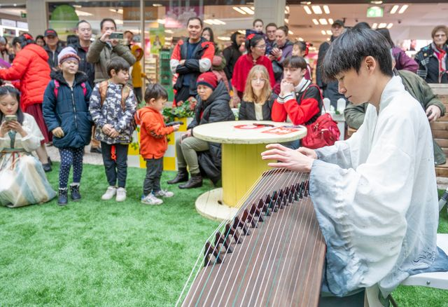
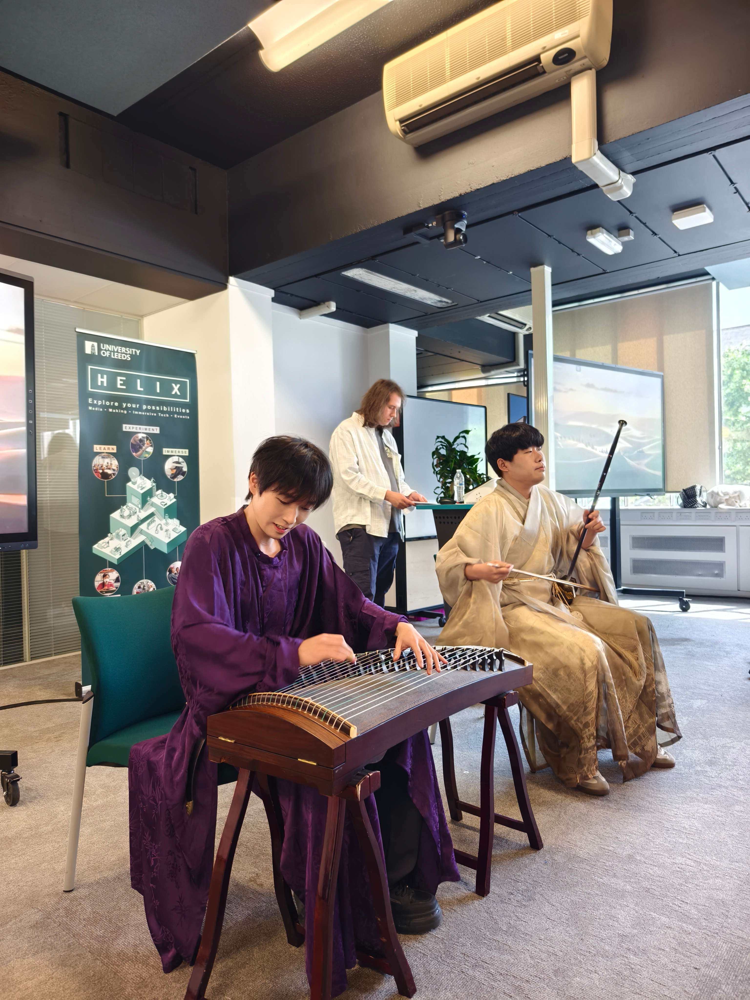
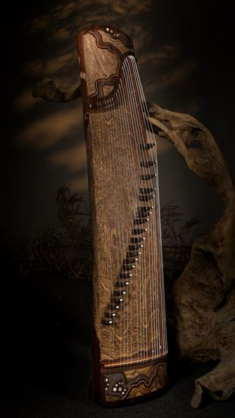
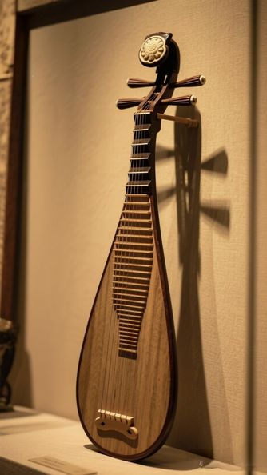
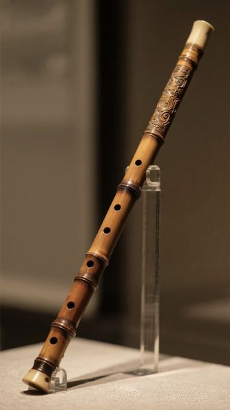
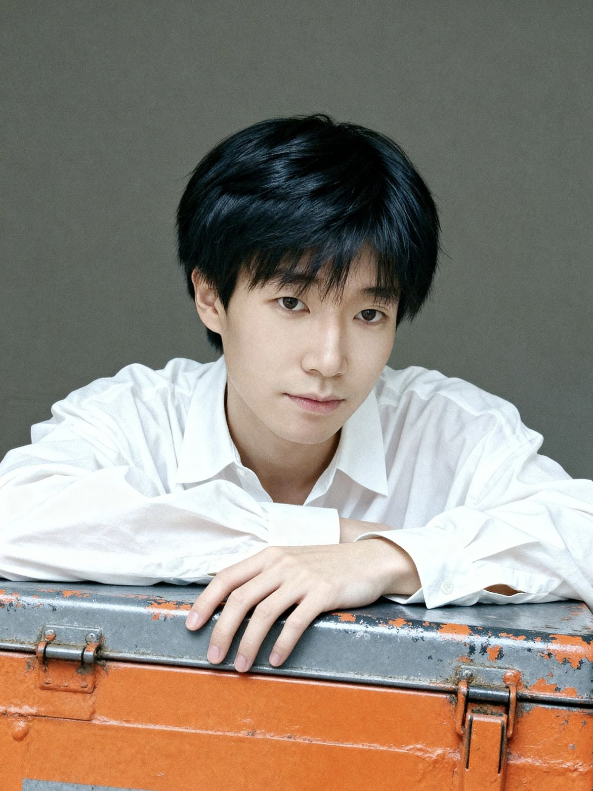
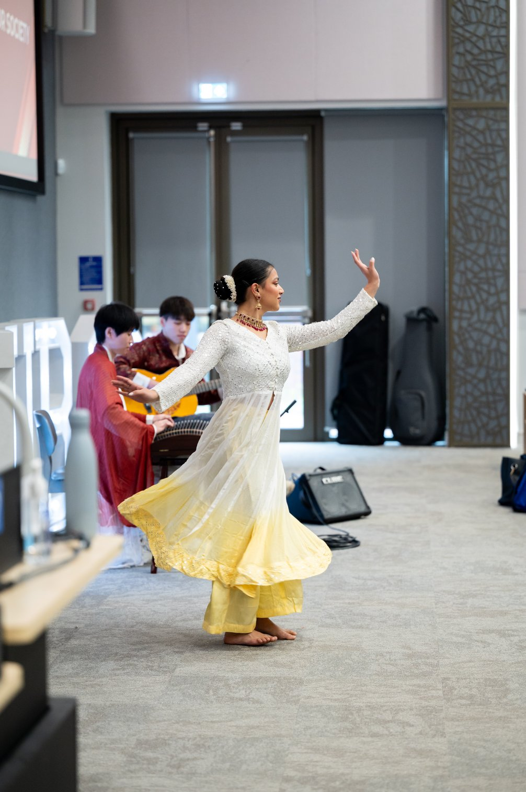
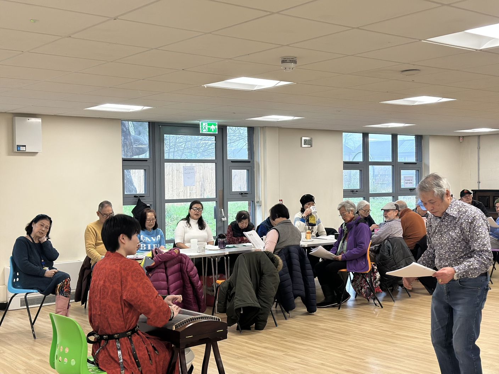
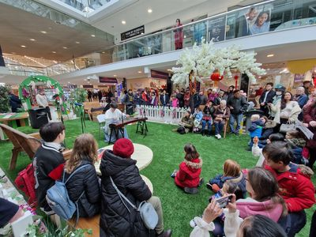

For a short time, familiar university and community spaces sounded and felt different. Music, dance, conversation, and shared attention created opportunities for people to pause, encounter different cultural traditions, and connect with others.
Supported by the Healthy Buildings Network at the University of Leeds, Sonic Belonging developed into a series of three workshops across university and community settings. Together, the events explored how music, dance, culture, and the physical environment interact to shape wellbeing, belonging, and social connection. The project built on an interdisciplinary proposal connecting cultural participation, psychosocial wellbeing, physical engagement, and inclusive space design.
"Can culturally meaningful sound change not only how people feel, but also how they experience the spaces they share?"
— the central question behind Sonic Belonging

Buildings Are Heard as Well as Seen

Discussions about healthy buildings often begin with measurable features such as ventilation, temperature, lighting, accessibility, and physical safety. These are essential, but they do not fully explain why one room feels warm and restorative while another feels sterile, stressful, or socially uninviting.
Buildings are also sensory, social, and cultural environments. What we hear within them — and whose cultures those sounds represent — can influence whether we feel comfortable, recognised, and able to connect with others.
A technically functional building may still offer few opportunities for people to pause, listen, participate, or see their cultural experiences reflected in shared space. Conversely, an ordinary lounge or community room can take on a different character when it is animated by meaningful sound, movement, hospitality, and human interaction.
Sonic Belonging brought together these concerns through perspectives from organisational behaviour, music and performance, wellbeing, and human-centred thinking about space. Rather than treating music as background entertainment, the project used live performance as a starting point for considering how shared environments might better support emotional restoration, cultural participation, and inclusive community life.
Three Workshops, Three Ways of Belonging
A Restorative Pause on Campus
4 June 2026 · Wellbeing Hub Lounge, University of Leeds
The first workshop brought Chinese traditional music and dance into the warm, informal setting of the Wellbeing Hub Lounge. Staff and students were invited to step away from their desks, listen to live performance, and learn about the instruments and cultural traditions represented.
The programme featured instruments including the guzheng, erhu, pipa, dizi, and zhongruan. Short introductions between pieces helped make the experience accessible to people with little or no prior knowledge of Chinese traditional music.




The event was deliberately informal. It was not presented as a formal concert requiring specialist knowledge or advance preparation. Instead, it offered a moment of rest and shared attention within the working day — a space in which people could slow down, encounter something unfamiliar, and spend time with others outside their usual academic or professional routines.
Music, Memory, and Community
22 June 2026 · Beeston Village Community Centre

The second workshop moved beyond the university campus and into the local community. Delivered with Health for All at Beeston Village Community Centre, it was designed particularly for members of the local Chinese older-adult community.
This change of setting allowed the project to explore how culturally familiar music and dance might operate in a community context, where sound can be connected not only to artistic appreciation but also to memory, identity, home, and shared cultural experience.
Taking the activity into the community also raised different questions about healthy space. Is the venue familiar and easy to reach? Does the room feel comfortable and socially welcoming? Can participants engage informally rather than simply observe? How might the setting encourage conversation and connection before, during, and after the performance?
The workshop extended the idea of sonic belonging beyond campus. It highlighted the value of meeting communities in spaces they already know and use, rather than assuming that meaningful engagement must take place within university buildings.
When Traditions Meet
26 June 2026 · Wellbeing Hub, University of Leeds
The third event formed part of the University's Summer Celebration and brought together music and dance traditions from both China and India.

Chinese musicians and dancers performed alongside Indian musicians and dancers, creating a cross-cultural programme shaped by sound, rhythm, gesture, and movement. The event welcomed colleagues, families, and children, giving it a lively, celebratory, and intergenerational atmosphere.


Cross-cultural fusion was not treated as making different traditions appear the same. Instead, the programme allowed distinct artistic languages to remain visible while responding to one another. Music and movement became a shared form of dialogue, creating opportunities for curiosity, recognition, and mutual appreciation.
Together, the three workshops traced a journey from campus wellbeing, to culturally specific community engagement, and finally to cross-cultural public celebration. Each setting offered a different way of understanding what belonging can mean.
A Pause, a Memory, a Sense of Belonging
Anonymous post-workshop feedback from the Wellbeing Hub event offered a rich picture of how participants experienced the music, cultural content, and room itself.
Music Created a Restorative Pause
Relaxation was one of the clearest themes. Participants described the performance as calming, soothing, comfortable, and emotionally refreshing.
One person noticed their shoulders relaxing and their breathing slowing during the guzheng performance. Another said the event created space to take a proper break and temporarily step away from work. Someone who had been having a difficult day wrote that the performance had lifted their mood.
"It felt like a mental reset."
— Workshop participant, Wellbeing Hub Lounge
These responses do not mean that a single music workshop should be treated as a clinical intervention. They do, however, suggest that informal cultural activity can create valuable moments of psychological pause within busy working and learning environments.
Cultural Sound Activated Memory and Recognition
The performances also prompted memories of childhood, family gatherings, school experiences, poetry, and previous encounters with traditional instruments.
For some participants, this generated cultural pride and a feeling of being represented. One respondent described seeing so many Chinese traditional instruments together in the UK as a rare and meaningful experience. Another wrote that the music made them feel culturally seen in a way they had not expected.
Other participants connected with the performance despite not coming from the cultures represented. They described curiosity, emotional engagement, and a desire to learn more about the instruments and artistic traditions.
One participant recalled being moved to tears by the erhu because it reminded them of music their grandmother had listened to, even though they were not Chinese. This illustrates how culturally specific art can carry meanings that are both particular and widely human.
Belonging Involved More Than Being Present
Several responses went beyond enjoyment and referred directly to belonging, inclusion, and community.
Participants valued the warm atmosphere and the accessible explanations provided by performers. Some reflected on how rarely non-Western musical traditions are heard in everyday university spaces. Others said that the workshop made the campus feel more alive, welcoming, and human.
"Belonging is not just about being allowed in a space, but about feeling culturally and emotionally at home there."
This insight sits at the heart of the project. Inclusion is not only a matter of whether people can physically enter a building. It also concerns whether they can recognise something of themselves within it, whether their cultural traditions are treated as valuable, and whether the atmosphere allows emotional and social participation.
Shared Performance Created Community
Participants also described the workshop as an opportunity to connect across backgrounds, disciplines, and roles.
Universities can sometimes feel fragmented, with staff and students distributed across different schools, buildings, and professional communities. A shared cultural event offered a temporary point of connection that was not organised around work, assessment, or formal networking.
One participant reflected that just one hour of music and dance had created a sense of community they did not often experience on campus. Others suggested that a dedicated or recurring music space could bring staff and students together and celebrate the cultural diversity of the university community. The performance also made live music feel more accessible — rather than requiring people to buy a ticket or enter a formal concert venue, it placed cultural activity within an ordinary part of daily campus life.
The Room Mattered
Participants' comments made clear that the experience was shaped not only by what was performed, but also by where and how the performance took place.
The Wellbeing Hub Lounge had several qualities that worked particularly well. Participants appreciated its intimacy, natural light, comfortable furniture, carpets, soft furnishings, and informal atmosphere. Sitting close to the performers made the event feel personal, and the room carried the sound surprisingly well despite not being designed as a concert hall.
At the same time, the workshop revealed practical limitations. Some audience members found it difficult to see the instruments or dance movements from the back. A small raised platform, staggered seating, or a semicircular layout could have improved visibility. External noise from vehicles, wind, and conversations occasionally competed with the performance. The room also became warm, suggesting that ventilation and temperature need to be considered alongside acoustics.
The position of the entrances created another challenge. People arriving late or leaving early had to move close to the performance area, making their movements noticeable and potentially distracting.
Participants also commented on signage and discoverability. One person said they had not known that the Wellbeing Hub Lounge existed before attending the event. A space cannot support community wellbeing if the people who might benefit from it cannot find it or do not realise that they are welcome.
These observations suggest that a healthy music space is about much more than technical acoustic quality. It must also support visibility, comfort, circulation, accessibility, atmosphere, and cultural openness.
What Might a Music-Friendly Shared Space Look Like?
The participant feedback generated six practical principles.
Acoustic Comfort
Limit distracting external noise and provide clear sound without becoming overly controlled or clinical. Soft furnishings, rugs, curtains, and acoustic panels may help create balance.
Clear Sightlines
People should be able to see instruments, facial expressions, and movement. Semicircular seating, staggered rows, or a modest raised performance area can make a significant difference.
Flexible Comfort
Movable, comfortable seating allows the same room to support listening, discussion, informal socialising, and participatory music-making — occupied and welcoming without becoming crowded.
A Warm, Human Atmosphere
Natural light, warm colours, plants, artwork, soft materials, and adjustable lighting over white walls and fluorescent institutional environments — closer to a living room than a lecture theatre.
Accessible Circulation
The location of entrances, seating, and pathways should allow people to arrive, leave, and move through the room without unnecessary disruption. Clear signage and convenient locations are also part of accessibility.
Cultural and Participatory Openness
Support more than passive listening — cultural explanation, storytelling, movement, instrument demonstrations, informal conversation, and opportunities for participants to make music themselves.
Together, these principles show that designing for sonic belonging involves physical, sensory, social, and cultural considerations.
What I Learned as an ECR Project Lead
As an early-career researcher, this project showed me that creating sonic belonging involves much more than arranging performers and selecting music. It requires attention to who is invited, where the activity takes place, how people move through the room, and whether cultural traditions are introduced in an accessible and welcoming way.
The project also allowed me to bring together my interests in psychology, music psychology, organisational behaviour, and traditional Chinese music performance. What began as a small funded idea developed into three events, new partnerships, and a broader understanding of how cultural activity can contribute to healthier shared environments.
From Temporary Events to Wider Communities
The strongest message from Sonic Belonging is that culturally inclusive music and dance should not remain limited to one venue, one audience, or one type of institution.
The project began on campus, extended into a local community setting, and then developed into a cross-cultural celebration for colleagues, families, and children. This progression showed that the same central idea — using meaningful sound and movement to support connection — can be adapted to very different groups and environments.
The next step is therefore to take the project further: to more university spaces, community centres, older-adult groups, schools, care settings, workplaces, and public events. Future sessions could combine performance with instrument demonstrations, participatory music-making, conversation, and opportunities for communities to shape the programme themselves.

There is also potential to:
- develop regular lunchtime cultural music sessions;
- create partnerships with community and wellbeing organisations;
- bring culturally familiar music to older adults and groups that may experience social or cultural isolation;
- encourage exchange between different musical and dance traditions;
- explore how cultural soundscapes operate in workplaces, care environments, universities, and neighbourhood spaces;
- build a larger programme of research and public engagement around music, wellbeing, belonging, and healthy environments.
As the project expands, participant insights can also be translated into a concise community-informed resource on music-friendly shared spaces, bringing together practical considerations around acoustics, atmosphere, accessibility, layout, and participation. This would support future organisers and partners while remaining one output within a broader programme of engagement.
Sonic Belonging suggests that a meaningful cultural space does not require a purpose-built concert hall. It can begin in a university lounge, a community centre, a care setting, or another ordinary shared room — provided that people feel comfortable, represented, and able to connect.
"A healthy shared space is not only one in which people can breathe, move, and work safely. It is also a space in which people can hear something of themselves — and listen to one another."
Acknowledgements
Sonic Belonging was supported by the Healthy Buildings Network at the University of Leeds through its ECR Small-Grant programme. I would like to thank Professor Lynda Song, Dr Aiqin Liu, and Dr Xunnan Li for their interdisciplinary support and contribution to the development of the project.
I am also very grateful to the organisations and partners who helped make the workshop series possible: Greg Hull (Wellbeing Hub), Huazhu Liu (Health for All), Sonal Bhakta (N4MES Network), and Rebecca (Beeston Village Community Centre / Lychee Red).
Special thanks go to all of the musicians and dancers whose creativity, commitment, and generosity brought the project to life: Jiacheng Yu, Yihan Zhang, Jiaxuan Yang, Vince Chin, Junda Chen, Thomas Barthelemy-Lardy, Rishabh Dudani, Boya Yu, and Paridhi Agarwal.
I would also like to offer a special acknowledgement to Marco-Felipe King for his comprehensive assistance throughout the project. His support with coordination, communication, promotion, and practical arrangements was invaluable in helping the workshops develop successfully.
Finally, sincere thanks go to all participants, audience members, volunteers, and community partners who shared their time, experiences, and reflections. Their engagement and feedback were central to the project and will help inform its future development.
About the Project Lead

Lijun Zhang
Lijun Zhang is a PhD researcher in Management and Organisational Behaviour at Leeds University Business School. His interdisciplinary work explores music, wellbeing, belonging, and the human experience of shared environments. With a background in psychology, music psychology, and traditional Chinese music performance, he is particularly interested in how cultural sound can contribute to healthier and more inclusive workplaces, universities, and community spaces.